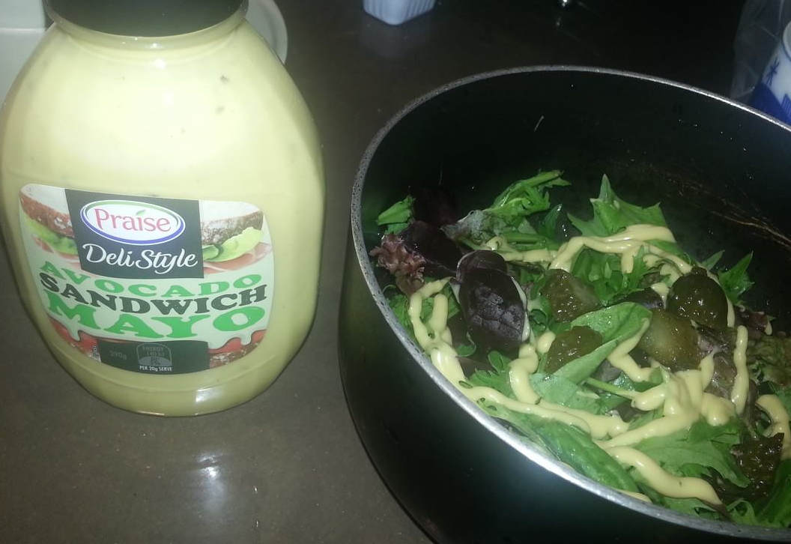

Navigate/Select html tags in Emacs
UPDATED:
Navigate/select html tags is kind of difficult. I've not found any plugin which could match Vim's matchit.
The most close one in Emacs is smartparens. You can check this discussion on Google Plus to get general impression.
I use sp-select-next-thing from smarparens to select html tags. But I'm not satisfied with this command because it's picky on the location of my cursor and selection of multiple html tags is buggy.
So here is my fix, the new command my-sp-select-next-thing which fix all these issues.
Screen cast:

Here is the code to insert it into your ~/.emacs:
;; make sp-select-next-thing works even the cusor is in the open/close tag
;; like matchit in vim
;; @return t => start from open tag; nil start from close tag
(defun my-sp-select-next-thing (&optional NUM)
(interactive "p")
(let* ((b (line-beginning-position))
(e (line-end-position))
(char (following-char))
(p (point))
rbeg
rend
(rlt t))
;; "<" char code is 60
;; search backward
(if (not (= char 60))
(save-excursion
(while (and (<= b (point)) (not (= char 60)))
(setq char (following-char))
(setq p (point))
(backward-char))))
;; search forward
(if (not (= char 60))
(save-excursion
(while (and (>= e (point)) (not (= char 60)))
(setq char (following-char))
(setq p (point))
(forward-char))))
;; do the real thing
(when (and (= char 60) (< p e))
(goto-char p)
(forward-char)
(if (= (following-char) 47)
(progn
;; </
(backward-char)
(setq rlt nil))
(progn
;; < , looks fine
(backward-char)
(setq rlt t)))
(sp-select-next-thing)
(setq rbeg (region-beginning))
(setq rend (region-end))
(while (> NUM 1)
;; well, sp-select-next-thing is kind of wierd
(re-search-forward "<[^!]")
(backward-char 2)
(sp-select-next-thing)
(setq rend (region-end))
(setq NUM (1- NUM)))
(push-mark rbeg t t)
(goto-char (1-rend)))
rlt))
Navigation is easy. After selecting the tags, press C-x C-x to move the focus. That's it.
For evil-mode, I write some code which simulate the famous matchit in vi:
(require 'evil)
;; {{ evil-matchit
(defun my-evil-jump-item-enhanced-for-html ()
(interactive)
(if (or (eq major-mode 'html-mode)
(eq major-mode 'xml-mode)
(eq major-mode 'nxml-mode))
(progn
(if (not (my-sp-select-next-thing 1)) (exchange-point-and-mark))
(deactivate-mark))
(progn
(evil-jump-item))))
(define-key evil-normal-state-map "%" 'my-evil-jump-item-enhanced-for-html)
;; }}
Now you can press % in evil to jump between tags!
Requirement:
- smartparens-1.5
- evil-1.0.7
- emacs-24.2.1
BTW, I also tried the web-mode-tag-match in web-mode which provided similar tag match feature.
At least now (2nd October,2013) web-mode does not support freemarker syntax. But smartparens is more tolerant to these template syntax.
UPDATE (6th Nov, 2013): I started a new project evil-matchit which is not dependent on smartparens. Please check it out. But you can still use my old code because it support more languages.
UPDATED (13rd Jan, 2014): evil-matchit is now powerful enough to replace my old tricks.
苦瓜胡萝卜炒鸡蛋做法
- 菜谱
- 尽量切小丁
- *小火*煎蛋
- 我先炒了胡萝卜
Take bavarian tasting platter at Bavarian Bier Cafe Parramatta
- Location at google map
- "platter" means different kinds of foods in one big platter
- sausage is good
- $31


my salad
As my friend said,this avocado sauce is better: 
南瓜粥作法
- 三杯米,南瓜一个
- 南瓜切小块,越小越好,因为不打算煮太长时间粥,而南瓜要完全溶解
- 南瓜切皮的诀窍在于南瓜开水泡两分钟.参考阿基师教你切南瓜皮
- 米要冷水浸泡20分钟
- 放入南瓜和米后,煮开,然后到入麻油(防止粘锅底),小火烧一小时,不断搅拌粥
- 取决于口味可以加糖


How to manage emacs packages
I have 168 packages installed through Emacs package manager. And I shared my emacs.d at github.
So these days I have been spending much time on solve the issues for people who use my .emacs.d.
The root cause of most issues is the packages downloaded from melpa are not stable enough.
That's understandable because packages hosted at melpa are built automatically from developers' git repositories.
Now here is my solution:
- I use more stable packages from other repositories if possible.
- I use whitelist to explicitly list the packages I want to install from melpa.
White list because although packages on non-melpa are more stable, there are still some exceptions.
For example, the package "erlang" exists both in melpa and marmalade. But only the version at melpa is usable.
Now I need show you the code. See my init-elpa.el at github for configuration. Especially the code related to variable "melpa-include-package".
Use `git send-email' at ubuntu
When I try to use `git send-email' at ubuntu 13.04, I get error message some perl modules are missing.
So here is one line command to install all missing perl modules:
sudo cpan Error Net:SMTP:SSL MIME::Base64 Authen::SASL
One liner bash to create/update playlist for mpd
I put all my audio files in ~/Music.
The below script create a playlist in m3u format and ask mpd to load it:
cd ~/Music;find . -name '*.mp3' -o -name '*.flac'|sed -e 's%^./%%g' > all.m3u;mpd ~/.mpd/config;mpc clear;mpc load all.m3u;mpc update
Here is content of my ~/.mpd/config which is basically only a copy from official sample configuration:
# See the mpd.conf man page for a more detailed description of each parameter. music_directory "~/Music" playlist_directory "~/.mpd/playlists" db_file "~/.mpd/mpd.db" log_file "~/.mpd/mpd.log" pid_file "~/.mpd/mpd.pid" state_file "~/.mpd/mpdstate"